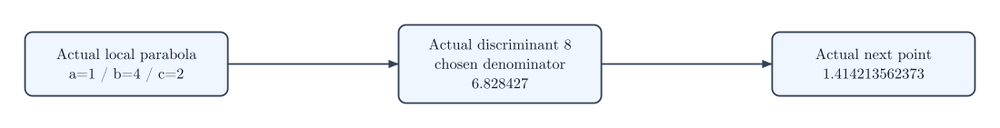
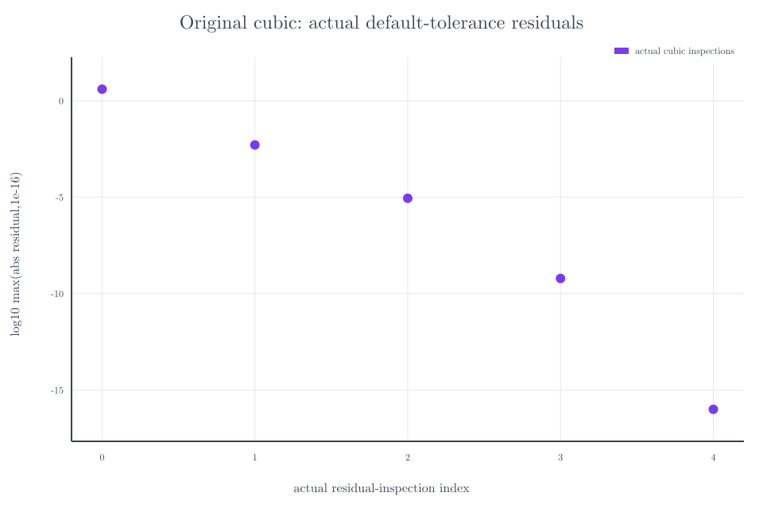
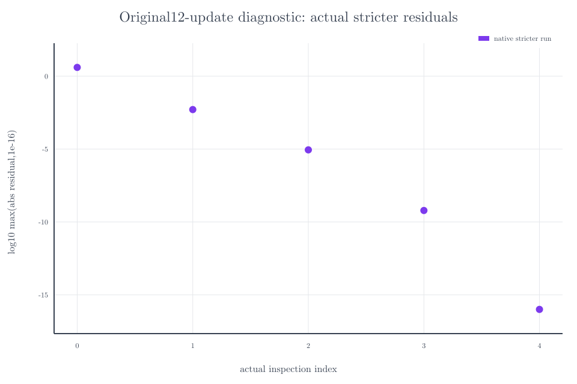
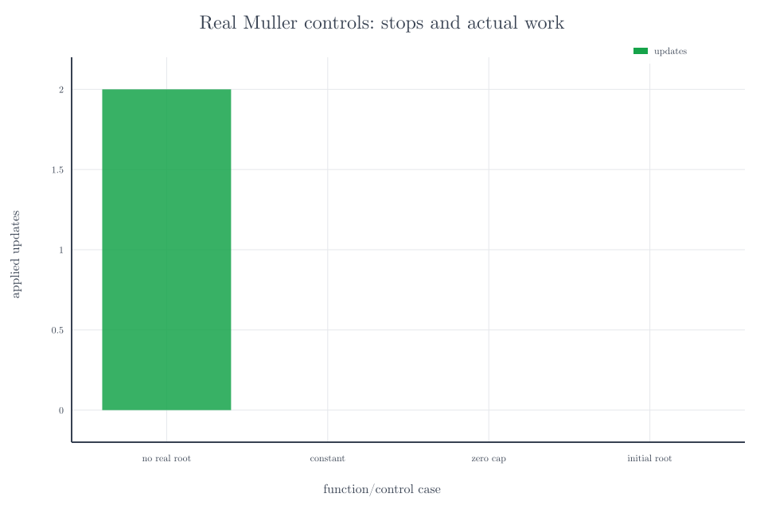

Muller root iteration
Abstract
Locate a zero of a scalar function from three starting coordinates using only function values. Muller iteration fits a quadratic and chooses a numerically favorable root update. We inspect a hand-checkable quadratic, retain the original cubic and exponential examples, and distinguish residual acceptance, iteration caps and numerical stops. The native real-valued discriminant clamp does not supply a complex-root method or a global convergence guarantee.
Fit a parabola in local coordinates
At the three current points, define h0=x1−x0 and h1=x2−x1. Their divided differences d0 and d1 determine the quadratic Q(h)=a*h squared+b*h+c in local coordinate h=x−x2, with a=(d1−d0)/(h0+h1), b=a*h1+d1 and c=f(x2). Solving Q(h)=0 gives the cancellation-aware update
Choose the sign making the denominator's magnitude larger; the native tie rule chooses the minus branch. For a finite nonzero denominator this avoids subtracting nearly equal terms in that denominator. It does not make every earlier coefficient computation overflow-safe or guarantee that the selected root is useful. The retained real variant replaces a negative discriminant by zero. That changes the quadratic root problem and invalidates an unqualified appeal to complex Muller convergence.
For a smooth simple root, sufficiently close distinct iterates and the appropriate unmodified root branch, quadratic interpolation gives next error proportional to the product of the preceding three errors at leading order. The corresponding local-order equation is p cubed=p squared+p+1, whose positive root is about1.839. Those assumptions, rather than a short falling residual plot, justify the local order. Multiple roots, poor starts, clamps and degeneracies need not behave that way.
One real quadratic proposal
For f(x)=x squared−2 and seeds0,1,2, the fitted coefficients are exactly a=1,b=4,c=2. The raw discriminant is8, so no clamp is needed. The larger denominator gives a next point near the positive square root of two. The native record supplies every coefficient and the proposed point; no report-side Muller loop is used.
#include <dm/dm.hpp>
int main() {
std::filesystem::create_directories("build");
auto t = dm::algorithms::muller_trace([](double x) {
return x * x - 2;
}, 0, 1, 2);
auto &s = t.steps.front();
dm::graphics::Diagram d;
d.node("a", {0, 0},
std::format("Actual local parabola\na={} / b={} / c={}", s.a, s.b,
s.c)).node("b", {7, 0},
std::format("Actual discriminant {}\nchosen denominator {:.6f}",
s.discriminant_raw, s.denominator)).node("c", {14, 0}, std::format("Actual next point\n{:.12f}", s.next)).edge("a", "b").edge("b", "c");
std::print("| actual a | actual b | actual c | raw discriminant | clamp | actual denominator | next " "point |\n| ---: | ---: | ---: | ---: | --- | ---: | ---: |\n| {} | {} | {} | {} | {} | {} | " "{} |\n",
s.a, s.b, s.c, s.discriminant_raw, s.clamped, s.denominator,
s.next);
std::print("\nActual callbacks: {}, updates: {}, stop: {}.\n",
t.run.evaluations, t.run.updates,
dm::algorithms::muller_stop_name(t.run.stop));
d.save_svg("build/muller_tiny.svg");
}| actual a | actual b | actual c | raw discriminant | clamp | actual denominator | next point |
|---|---|---|---|---|---|---|
| 1 | 4 | 2 | 8 | false | 6.82842712474619 | 1.414213562373095 |
Actual callbacks: 4, updates: 1, stop: residual.

Retain the original cubic and exponential examples
The original cubic is x cubed−x−2 with seeds1,1.5,2. It has a root between1 and2, where its derivative3x squared−1 is positive, so that interval contains exactly one root. The original exponential problem is exp(x)−2 with seeds0,0.5,1 and known root ln2. The native default tolerance is a strict absolute function residual below1e−10. It is not a bound on coordinate error without additional derivative information.
The plot below records actual default-tolerance cubic inspections. Compatibility iterations count one-based loop residual inspections; actual updates and callback calls are reported separately. If the last initial seed already passes, the legacy iteration count is one but no update occurs.
#include <dm/dm.hpp>
int main() {
std::filesystem::create_directories("build");
auto cubic = [](double x) { return x * x * x - x - 2; };
auto t = dm::algorithms::muller_trace(cubic, 1, 1.5, 2);
auto e = dm::algorithms::muller_run([](double x) {
return std::exp(x) - 2;
}, 0, .5, 1);
std::print("| original problem | native root | residual | compatibility iterations | actual updates | " "actual callbacks | converged |\n| --- | ---: | ---: | ---: | ---: | ---: | --- |\n| cubic | " "{} | {} | {} | {} | {} | {} |\n| exponential | {} | {} | {} | {} | {} | {} |\n",
t.run.result.root, t.run.result.residual,
t.run.result.iterations, t.run.updates, t.run.evaluations,
t.run.result.converged, e.result.root, e.result.residual,
e.result.iterations, e.updates, e.evaluations, e.result.converged);
std::print("\nExponential root minus log2: {}.\n",
e.result.root - std::log(2.));
std::vector<double> x, y;
for (std::size_t i = 0; i < t.steps.size(); ++i) {
x.push_back(i);
y.push_back(std::log10(std::max(std::abs(t.steps[i].f[2]), 1e-16)));
}
auto p = dm::graphics::RPlot::create();
p.points(x, y, "actual cubic inspections", {124, 58, 237}, 6).title(
"Original cubic: actual default-tolerance residuals").x_label(
"actual residual-inspection index").y_label("log10 max(abs residual,1e-16)").save_svg("build/muller_original.svg");
}| original problem | native root | residual | compatibility iterations | actual updates | actual callbacks | converged |
|---|---|---|---|---|---|---|
| cubic | 1.5213797068045676 | 0 | 5 | 4 | 7 | true |
| exponential | 0.6931471805599465 | 2.220446049250313e-15 | 5 | 4 | 7 | true |
Exponential root minus log2: 1.2212453270876722e-15.

Retain the original stricter twelve-update diagnostic
The legacy report also used a separate cubic diagnostic with tolerance1e−14 and cap12. That control is retained below through the same canonical trace API. Its residuals now belong to a real native call rather than a second hand-coded root algorithm. The plotted log10 value is floored at1e−16 only for display; actual residuals remain in the table. A zero or tiny plotted value is not an exact-root certificate or an empirical proof of the asymptotic order.
Every actual applied update triggers one new callback. The first three seed callbacks are always made, including when the update cap is zero. An explicit final cap check reuses the already evaluated last value and does not fabricate another callback or parabola.
#include <dm/dm.hpp>
int main() {
std::filesystem::create_directories("build");
auto t = dm::algorithms::muller_trace([](double x) {
return x * x * x - x - 2;
}, 1, 1.5, 2, 1e-14, 12);
std::vector<double> x, y;
std::print("| actual inspection | legacy iteration label | at cap | actual current x | actual abs " "residual | updated |\n| ---: | ---: | --- | ---: | ---: | --- |\n");
for (std::size_t i = 0; i < t.steps.size(); ++i) {
auto &s = t.steps[i];
x.push_back(i);
y.push_back(std::log10(std::max(std::abs(s.f[2]), 1e-16)));
std::print("| {} | {} | {} | {} | {} | {} |\n", i, s.legacy_iteration,
s.at_limit, s.x[2], std::abs(s.f[2]), s.updated);
}
std::print("\nActual stop: {}. Capture units: {}.\n",
dm::algorithms::muller_stop_name(t.run.stop), t.captured_entries);
auto p = dm::graphics::RPlot::create();
p.points(x, y, "native stricter run", {124, 58, 237}, 6).title(
"Original12-update diagnostic: actual stricter residuals").x_label(
"actual inspection index").y_label("log10 max(abs residual,1e-16)").save_svg("build/muller_strict.svg");
}| actual inspection | legacy iteration label | at cap | actual current x | actual abs residual | updated |
|---|---|---|---|---|---|
| 0 | 1 | false | 2 | 4 | true |
| 1 | 2 | false | 1.52051760426961 | 0.005120763728754918 | true |
| 2 | 3 | false | 1.5213782252652706 | 8.8059464202761e-06 | true |
| 3 | 4 | false | 1.5213797067017258 | 6.112694794779827e-10 | true |
| 4 | 5 | false | 1.5213797068045676 | 0 | false |
Actual stop: residual. Capture units: 17.

Numerical stops and a function with no real root
The function x squared+1 has no real zero. Its real-variant run can clamp negative discriminants and still stop without convergence; clamping does not manufacture a solution. A constant nonzero function produces a zero denominator. Repeated interpolation coordinates can stop with a coincident-node status when an update is needed. Zero updates still evaluates all three initial points and performs a final residual check.
Controls and seed finiteness are checked before callbacks. Nonfinite callback returns throw a domain error; nonfinite produced spacing, coefficients or updates throw overflow errors. Callback exceptions and earlier side effects propagate. A zero tolerance disables strict residual acceptance, even at a callback zero. The optional trace owns five seed/control scalar units and one unit per actual callback/inspection record, default1000000; zero disables. Admission is online and a later quota failure can follow earlier callbacks, with no partial returned history.
#include <dm/dm.hpp>
int main() {
std::filesystem::create_directories("build");
std::vector<std::string> labels{"no real root", "constant", "zero cap",
"initial root"};
std::vector<dm::algorithms::MullerRun> runs{dm::algorithms::muller_run([](double x) {
return x * x + 1;
}, -1, 0, 1), dm::algorithms::muller_run([](double) {
return 1.;
}, 0, 1, 2), dm::algorithms::muller_run([](double x) {
return x * x * x - x - 2;
}, 1, 1.5, 2, 1e-10, 0), dm::algorithms::muller_run([](double x) {
return x - 1;
}, 0, .5, 1)};
std::vector<double> updates;
std::print("| case | actual stop | converged | actual callbacks | actual updates | actual clamps |\n| " "--- | --- | --- | ---: | ---: | ---: |\n");
for (std::size_t i = 0; i < runs.size(); ++i) {
auto &r = runs[i];
updates.push_back(r.updates);
std::print("| {} | {} | {} | {} | {} | {} |\n", labels[i],
dm::algorithms::muller_stop_name(r.stop), r.result.converged,
r.evaluations, r.updates, r.clamped_discriminants);
}
auto p = dm::graphics::RPlot::barplot(updates, labels, "updates");
p.title("Real Muller controls: stops and actual work").x_label(
"function/control case").y_label("applied updates").save_svg(
"build/muller_controls.svg");
}| case | actual stop | converged | actual callbacks | actual updates | actual clamps |
|---|---|---|---|---|---|
| no real root | coincident-nodes | false | 5 | 2 | 2 |
| constant | zero-denominator | false | 3 | 0 | 0 |
| zero cap | iteration-limit | false | 3 | 0 | 0 |
| initial root | residual | true | 3 | 0 | 0 |

Conclusion and references
The quadratic example explains the actual proposal, while the two original problems show finite residual acceptance. Callback histories and cap checks give honest work counts. The real-discriminant clamp and explicit numerical failure states limit any convergence claim; none of these unbracketed runs supplies a general root-existence or coordinate-error certificate.
Muller, A method for solving algebraic equations using an automatic computer (1956) introduces quadratic interpolation for root solving. The nonnegative-discriminant clamp, strict residual rule, compatibility iteration labels and capture contract specify the native real variant.
Verification
This ten-report batch passes76 CTest cases,22 directly instrumented ASan/UBSan
cases,119 compiled and executed public examples,513/513 scoped documentation
definitions and ten representative clangd hovers. Independent Python Fraction
arithmetic and likelihood/mass reconstruction verify5266 captured records
with43990 checks, including the original Gaussian controls. Frozen valid-input
comparisons cover DFA quotients, byte recoding, event streams, interpolation,
tours, alignments, real-root paths, packing and nested-sampling trajectories.
Ten checkout headers and ten byte-identical installed development headers
compile independently; an installed-header native consumer links and runs. The
batch has42 executed complete programs and42 visually reviewed native figures,
with HTML/Markdown result and image-byte checks. These are scoped native checks,
not an installation claim for every language binding. Receipts:
build/mepml-conversion/batch-244-253/.